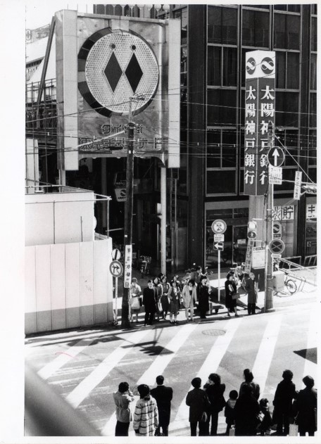
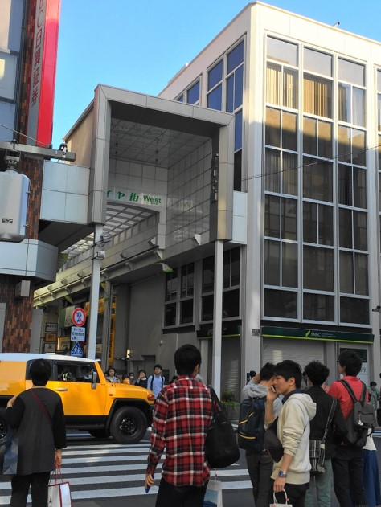

吉祥寺ダイヤ街


今と変わらないアーケードの面影。公園通りの東急百貨店側から吉祥寺ダイヤ街（旧称：ダイヤ街・東急チェリーナード）の入り口を撮影したものだ。1974（昭和49）年にできたこのアーケードは2008（平成20）年に解体され、2009年３月に現在のアーケードが完成した。右側に見える太陽神戸銀行は、神戸銀行と太陽銀行が合併し、1973年に誕生した。1990年には三井銀行と合併し、太陽神戸三井銀行に。1992年にはさくら銀行と改称、さらに2001年に住友銀行と合併し、現在は三井住友銀行となっている。
アーケード左に見える工事現場とアーケード右にある太陽神戸銀行とでは建物の前の道幅が違うことから、公園通り拡幅工事の最中であったことがうかがえる。記録によれば、工事現場にあった協和銀行が売買契約を結んだのが1975（昭和50年）。したがって、1975年～1976年に撮影された写真と推定される。写ってる人々の服装からして、季節は冬だろう。アーケードの左側には現在、りそな銀行やSMBC日興證券などが入る「吉祥寺ビル」が建っている。